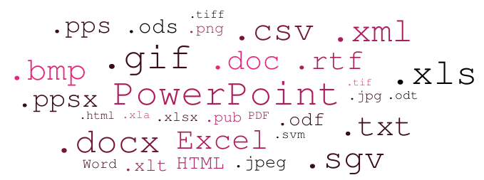

<!--
&lt;!&ndash;Sign in modal&ndash;&gt;
<div class="modal fade" id="signInModal" tabindex="-1" role="dialog" aria-labelledby="signInModalLabel"
     aria-hidden="true">
    <div class="modal-dialog login-box" role="document">
        <div class="modal-content">
            <div class="modal-header login">
                <h3 class="modal-title" id="signInModalLabel">Sign in</h3>
            </div>
            <form>
                <div class="modal-body">
                    &lt;!&ndash; Email &ndash;&gt;
                    <div class="input-group margin-top">
                        <span class="input-group-addon white glyphicon-background-green"><i class="glyphicon glyphicon-envelope"></i></span><input type="text" class="form-control" name="email" ng-model="email" placeholder="email address" autofocus>
                    </div>
                    &lt;!&ndash; Username &ndash;&gt;
                    <div class="input-group margin-top">
                        <span class="input-group-addon white glyphicon-background-green"><i class="glyphicon glyphicon-user"></i></span><input type="text" class="form-control" name="username" ng-model="user.username" placeholder="username" autofocus>
                    </div>

                    &lt;!&ndash; Password &ndash;&gt;
                    <div class="input-group margin-top">
                        <span class="input-group-addon white glyphicon-background-green"><i class="glyphicon glyphicon-lock"></i></span><input type="password" class="form-control" name="password" ng-model="user.password" placeholder="password">
                    </div>

                    <div class="input-group margin-top">
                        <div class="checkbox">
                            <label><input id="login-remember" type="checkbox" name="remember" value="1"> Remember me</label>
                        </div>
                    </div>
                </div>
                <div class="modal-footer">
                    <button type="button" class="btn btn-secondary" data-dismiss="modal">Close</button>
                    <button type="submit" class="btn glyphicon-background-green" data-dismiss="modal" ng-click="login()">Login</button>
                </div>
            </form>
        </div>
    </div>
</div>

<div>
    <div class="center">
        
    </div>

    <div class="app-description">
        Convert Word, Excel, PowerPoint, images and <a href="#!/extensions"><span class="badge">more</span></a> to PDF.<br>
        Go4PDF is a free application. Create an account and start converting - that simple &#9786;.
    </div>

    &lt;!&ndash;<div class="app-description">
        All posibilities in one application.
        Quality is guaranteed.<br>
        If you wish for extra capabilities, tell us about it. We'll get it done.
    </div>&ndash;&gt;
    <br>
    <h4>
        In 4 simple steps, you can get almost any file converted to PDF, with customizable options at your hand.
    </h4>
    <br>
    <div class="center">
        <div class="row">
            <div class="col-xs-6 col-sm-3">
                <p class="step">Step 1</p>
                <a class="my-btn my-btn-round my-btn-upload">
                    <i class="icon glyphicon glyphicon-upload"></i>
                    <p>Upload files</p>
                </a>
                <p>Upload all of your files with a single click or drag and drop.</p>
            </div>
            <div class="col-xs-6 col-sm-3">
                <p class="step">Step 2</p>
                <a class="my-btn my-btn-round my-btn-output">
                    <i class="icon glyphicon glyphicon-file"></i>
                    <p>Output settings</p>
                </a>
                <p>Personalize your PDF output. Add a password, watermark (image or text) by settings its size, position and opacity.<br>This step is optional.</p>
            </div>
            <div class="col-xs-6 col-sm-3">
                <p class="step">Step 3</p>
                <a class="my-btn my-btn-round my-btn-settings">
                    <i class="icon glyphicon glyphicon-duplicate"></i>
                    <p>Files settings</p>
                </a>
                <p>Customize each of your files before conversion. You can select specific files from a document, rotate images, or change order of files after upload.</p>
            </div>
            <div class="col-xs-6 col-sm-3">
                <p class="step">Step 4</p>
                <a id="generate-PDF-button" class="my-btn my-btn-round my-btn-export">
                    <i class="icon glyphicon glyphicon-floppy-save"></i>
                    <p>Export to PDF</p>
                </a>
                <p>Conversion to PDF is a click away. Never simpler.</p>
            </div>

        </div>
    </div>
</div>-->
